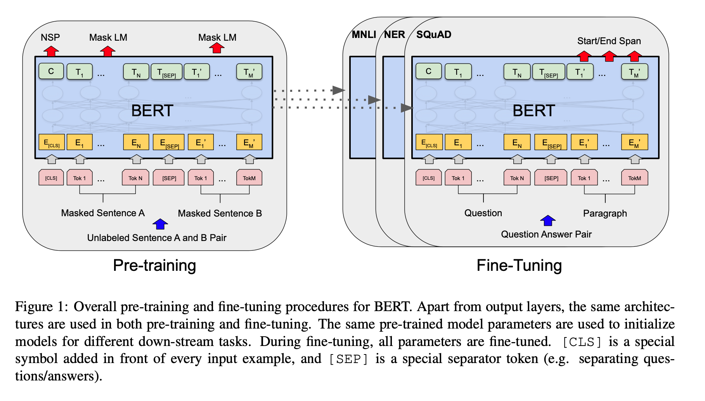

Recall BERT is a Bidirectional language model built on the Transformer Architecture. There are two steps in the framework: pre-training and fine-tuning. Pre-training initializes the weights, while the fine-tuning adjusts the weights per specific tasks such as Question Answering.
During pre-training, the model effectively generates universal language weights on a corpus of unlabeled data over different pre-training tasks. A distinctive feature of BERT is its unified architecture across different tasks.
Model Architecture
BERT’s model architecture is based on the original transformer implementation as described in ‘Attention is All You Need’. This paper linked an awesome annotated guide which I’ll have to spend some time digging into: http://nlp.seas.harvard.edu/2018/04/03/attention.html
Although BERT and GPT-1 are both based on the Transformer architecture, the main difference is BERT’s bidirectional attention. Thus was chosen to have the same model size as GPT-1 for comparison purposes.
Figure 1 demonstrates the 2 stage approach of Pre-training and Fine-tuning as well as demonstrating the similar structure each individual task contains.
